Cinquante haltes au creux de la Meuse, en partant de la table de Pierre Résimont — châteaux, abbayes, descentes de la Lesse, grottes, Plus Beaux Villages, brasseries.
— Planche I —
Le restaurant L'Eau Vive au centre. Chaque cercle, une distance. Chaque glyphe, une catégorie.
— Planche II —
Six profils, six adresses qui rentrent dans une après-midi avant le dîner.
Promenade des 7 Meuses, boucle 7,3 km en 2 h 30, 170 m de dénivelé.[71][72]
Descente classique, €27–31 pp. Partir avant 10 h pour traverser l'eau sans cohue.[27][28]
Quatorze aires de jeux thématiques, deux musées, jardins. €11–17/pers selon saison.[44][45]
Trois visites en un Pass à €22 / €20. Audio FR-NL-EN-DE-ES-CH, PMR.[1][68]
Cuves de cuivre 18e, dégustation des Caracole, Troublette, Saxo, Nostradamus. Samedi 14:00–17:30.[75][76]
— Planche III —
Quinze haltes vues à la pellicule, à classer par direction.
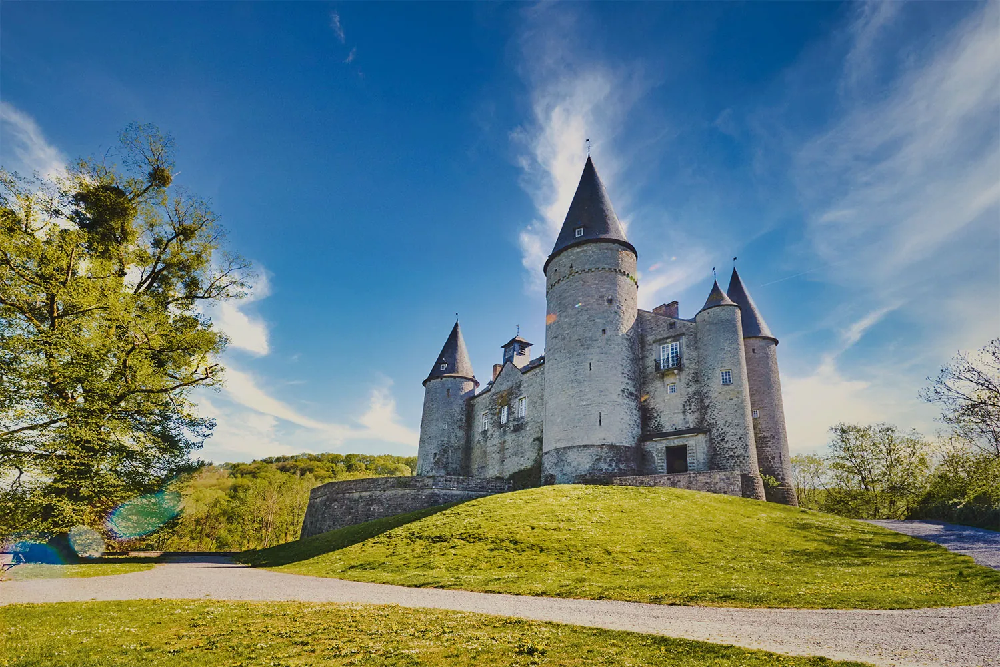
Donjon-conte-de-fées du 15e, enfants déguisés gratuitement en chevaliers/princesses; chasse au trésor en supplément.[6][7]
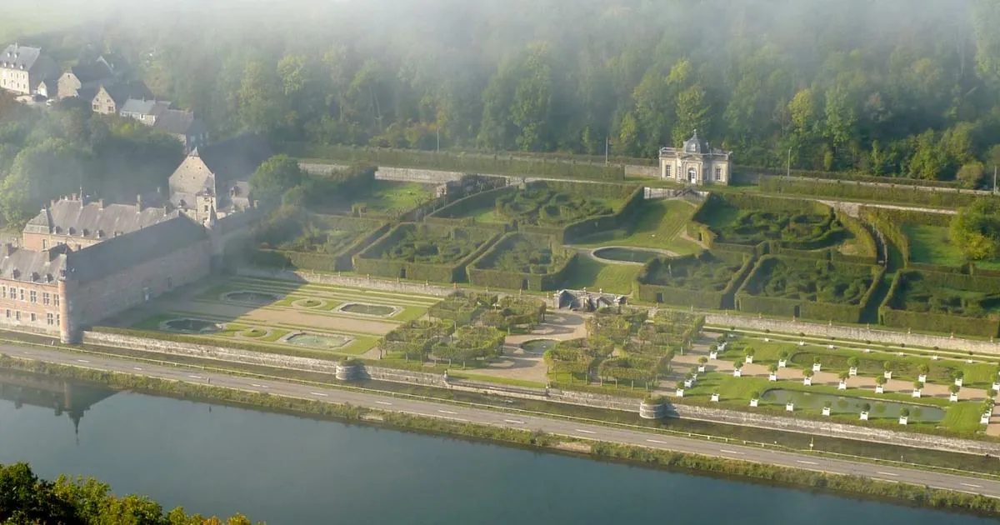
30 000 m² de jardins à la française, 9 bassins, 33 orangers historiques encore en caisse, pavillon Moretti.[8][9]
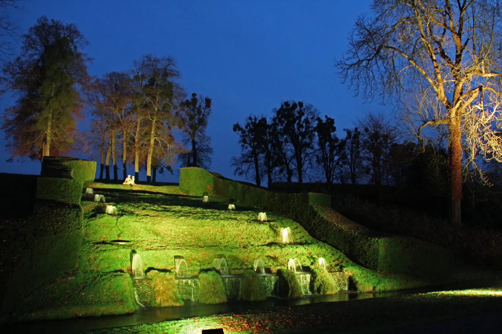
Cinquante jeux d'eau qui tournent sans pompe depuis 1758 — la seule gravité, dit-on mieux que Versailles. Mélange français / italien / anglais.[19]
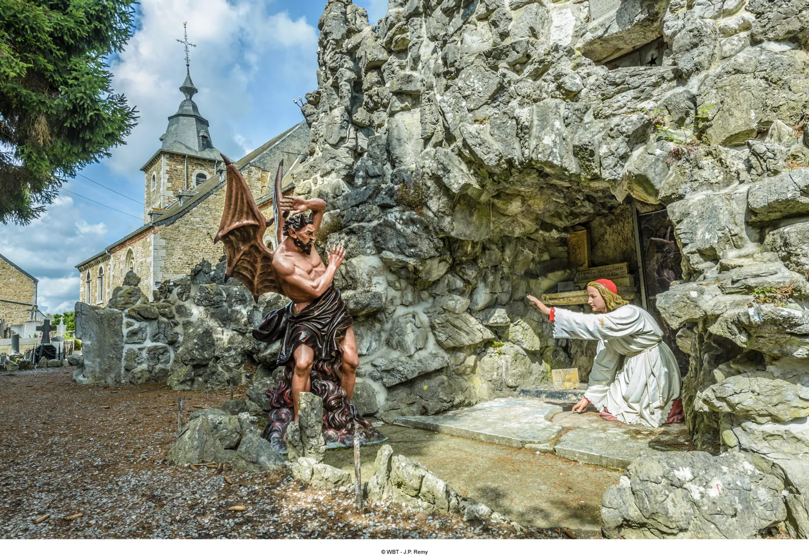
Grotte artificielle 1900–1903 montée par les villageois, tableau du diable en taille réelle. Derrière, le donjon Carondelet du 13e.[61][62]
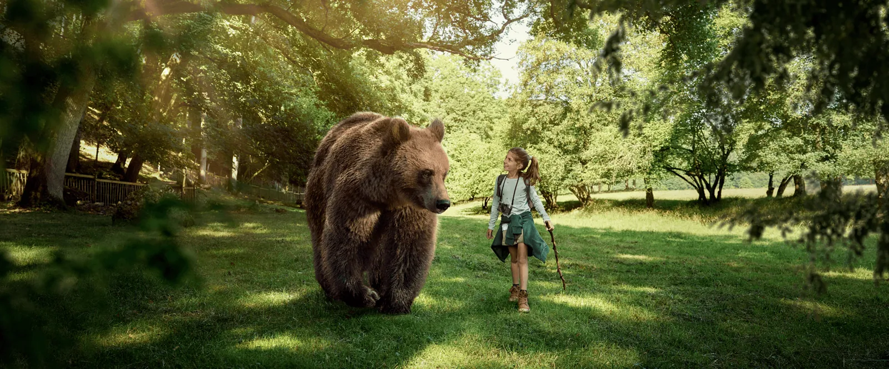
À 35 km on sort du rayon — mais l'e-ticket à −20 % avant le 28 février et l'arrivée avant 11 h ou après 14 h justifient l'écart.[42][43]
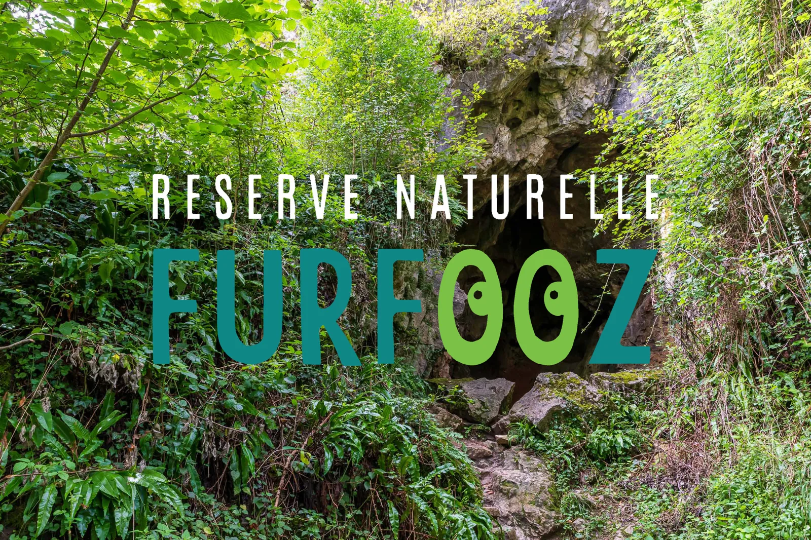
Boucle balisée de 3,5 km en 1–2 h, trois grottes visitables (Trou du Frontal, Trou des Nutons, Trou du Grand Duc), bains romains, éperon fortifié.[46]
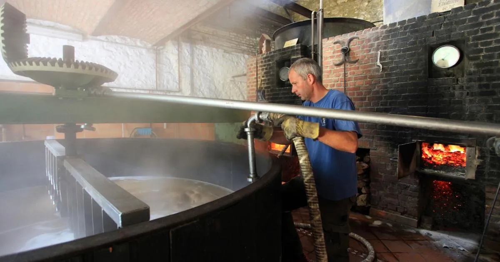
Cuves de cuivre chauffées au bois, méthode du 18e. Quatre bières maison — Caracole, Troublette, Saxo, Nostradamus — guidée EN/FR/NL/DE.[76]
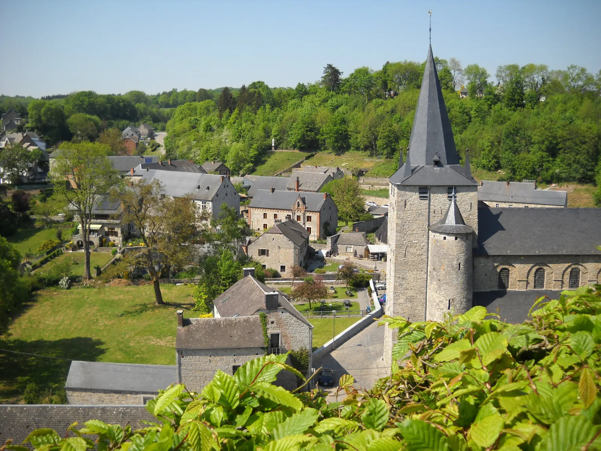
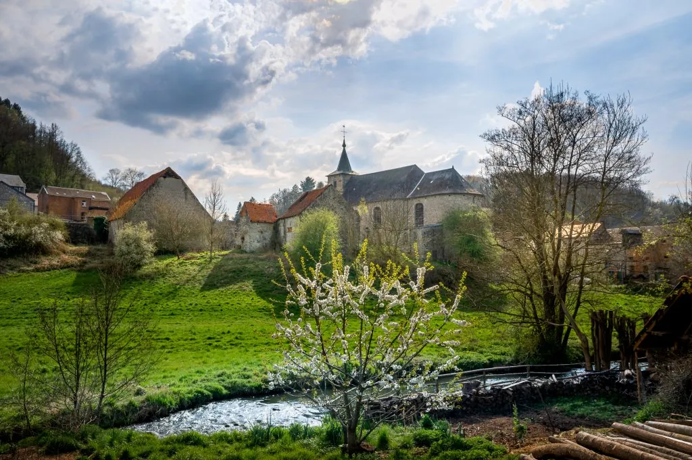
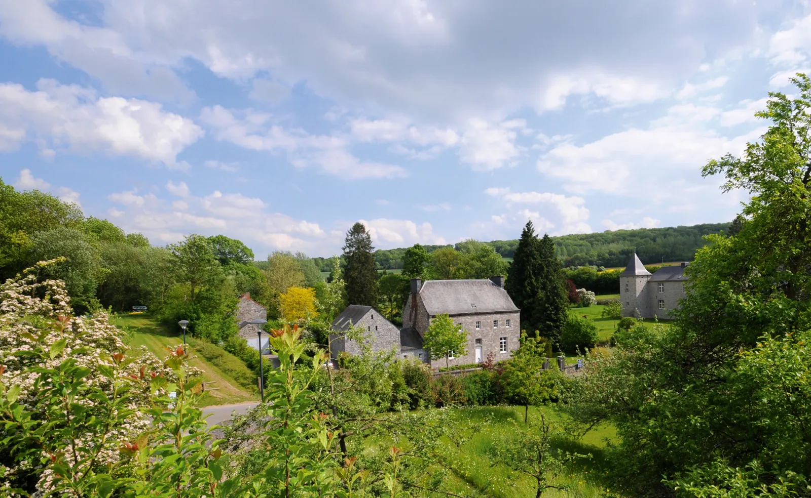
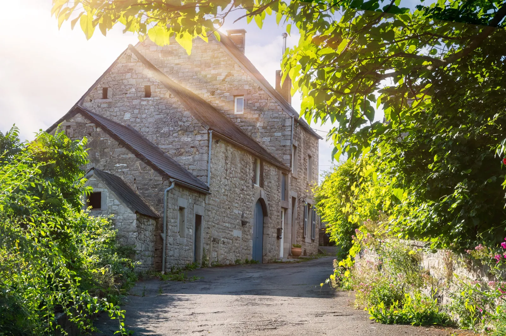
Château de la Forge du 18e, ruines de la Forteresse de Samson sur l'éperon rocheux dominant la confluence Samson-Meuse, grotte préhistorique Scladina.[59]
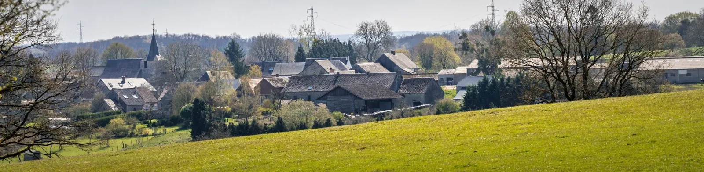
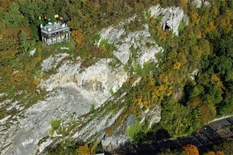
Falaises calcaires ~100 m au-dessus de la Meuse, face à l'église de Profondeville. Y aller par la Promenade des 7 Meuses, 7,3 km en 2 h 30.[71][72]
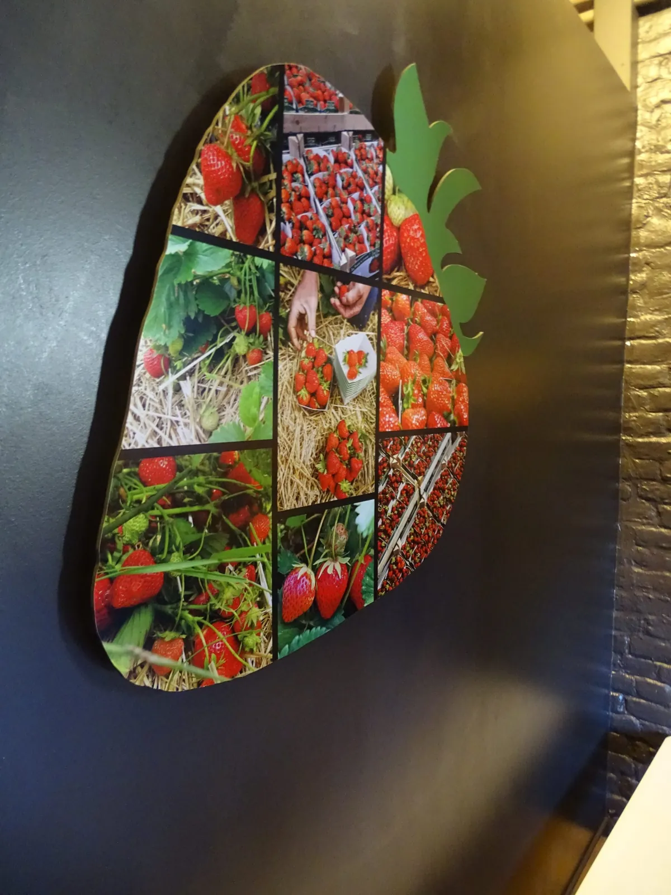
Musée + jardin de 15 variétés de fraises; saison mai–octobre, pic en juin. Étals au bord de route en pleine saison.[79][80]
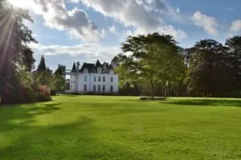
600 hectares; 14 aires de jeux thématiques, deux musées, jardins, sentiers. Piscines extérieures uniquement du 4 juil au 23 août.[44]
— Planche IV —
| Site | Horaires 2026 | Prix | État |
|---|---|---|---|
| Citadelle de Namur | Tous les jours 10–18h, 1 avr–27 sept[1] | €22 / €20 pass 3 visites[1] | Route Merveilleuse fermée jusqu'à fin mars[2] |
| Citadelle de Dinant | 10–18h (avr–sept); 10–16h30 (oct–mar)[4] | €15 / €13 HistoPad[4] | Téléphérique fermé sine die — 408 marches[53] |
| Château de Vêves | Sam–Dim+fériés 10–17h, 30 mar–1 nov; quotidien 6 juil–23 aoû[6] | €9,50 / €6,50[7] | Déguisement enfants offert |
| Château de Freÿr | Jeu–Dim+fériés 11–17h, 4 avr–15 nov[8] | €12 / gratuit −12[8] | — |
| Château de Spontin | Mar–Dim 10–17h (juil–aoû); Mer/Sam/Dim 14–17h (sept–oct)[11] | €8 / €5[11] | Privatisations: téléphoner[11] |
| Abbaye de Maredsous | Semaine 11–18h; week-end/fériés 10–19h[15] | centre gratuit · tour 1h30 dégustation[74] | Tour week-end / fériés / vacances[16] |
| Jardins d'Annevoie | Tous les jours 9h30–17h30, avril–octobre[17] | €9,50 / €5,50[17] | — |
| Abbaye de Floreffe | Moulin-brasserie tous les jours 11–18h; visites abbatiale 1 avr–30 sept[20] | €8 guidée / €5 libre[20] | — |
| TreM.a · Trésor d'Oignies | Mar–Dim 10–13h + 13h30–18h[21] | €5 / €8 avec expo · 1er dim gratuit[21] | Orfèvrerie Hugo d'Oignies 1225–50[22] |
| Domaine de Chevetogne | Toute l'année; piscines uniquement 4 juil–23 aoû[44] | NATURE €11 · LEISURE €11 · FUN €16[44] | 0–5 ans gratuits |
| Réserve de Furfooz | Tous les jours 10–16h30, 4 avr–1 nov[46] | €7,50 / €2 (6–12)[46] | Pas de poussette ni fauteuil |
| Grottes de Goyet | Dim+fériés + vacances scolaires, 15 fév–8 nov; départs 11h + 14h[49] | €13 / €10[49] | Réservation obligatoire |
| Grotte la Merveilleuse | Saisonnier (téléphoner) | €10 / €6[48] | 50 min autoguidé · 650 m |
| Lesse · 12 km | 4 avr–31 oct 2026; fermé le 6 juin[27] | €27–31 pp[28] | Sécheresse possible[96] |
| Téléphérique de Namur | Tous les jours 9h30–18h (avr–sept); semaine 7h–18h30[34] | €5,50 AS / €8 AR[34] | Seul téléphérique opérationnel |
| Grotte de Han (hors) | 10–15h; fermeture 12 nov 2026[43] | €29 / €22 grotte; PassHan €41,50[42] | −20 % e-ticket avant 28 fév[42] |
— Planche V —
Quatre programmations possibles, à plier dans la poche du veston.
— Le même week-end —
Le Cube — the restaurant's own riverside cottage — is the only true walking-distance stay.
Ten character properties — watermills, tannery hotels, themed-room guesthouses.
KIKK Festival (21–25 Oct 2026, Namur) is the anchor IT event in the area.
The full expedition synthesis — bed, table, programme.